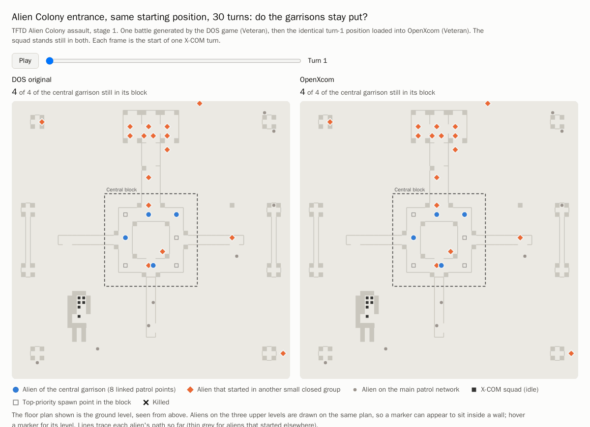

Each battle was generated by the DOS game, saved on turn 1 and converted to an OpenXcom save. Both games then ran 30 turns with the squad standing still. DOS is on the left, OpenXcom on the right.
Write-up
